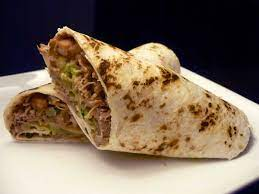

Pulled Pork Burritos

Description
This is a a great dish for anyone that likes pulled porn and burritos!
Ingredients
- Pork shoulder
- BBQ sauce
- Tortillas
Steps
- Place the pork shoulder in your crockpot.
- Add BBQ sauce to pork shoulder and make sure the whole thing is covered.
- Start your crockpot on high and leave on for four hours.
- Once the pork shoulder is cooked, use a fork to pull apart the meat.
- Place meat include your tortillas
Back to recipe list.